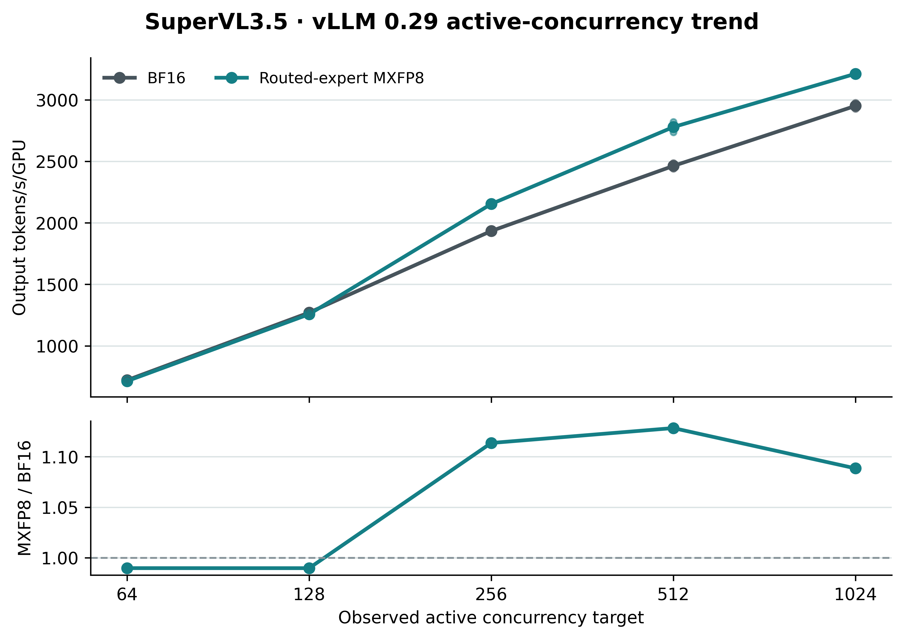

SuperVL3.5: BF16 vs routed-expert MXFP8
Each arm used the same BF16 checkpoint, synthetic prompt, 2,048 requests per trial and two timed trials. MXFP8 quantizes routed experts during model loading, outside the timed generation call. Lines show the two-trial mean output tokens/s/GPU; vertical spans and faint dots show the two individual trials. Points appear only when both logs show the configured active concurrency.

PDF figure · Validated JSON · Job manifest
Measured pairs
| Target C | Max Running BF16 / MXFP8 | BF16 tok/s/GPU | MXFP8 tok/s/GPU | MXFP8 / BF16 | Reached C | CUDA Graph max BF16 / MXFP8 | Job IDs |
|---|---|---|---|---|---|---|---|
| 64 | 64 / 64 | 720.9 | 713.5 | 0.990x | yes | 128 / 128 | 7960566 / 7960567 |
| 128 | 128 / 128 | 1270.5 | 1257.4 | 0.990x | yes | 256 / 256 | 7960568 / 7960570 |
| 256 | 256 / 256 | 1933.9 | 2153.6 | 1.114x | yes | 512 / 512 | 7960389 / 7960396 |
| 512 | 512 / 512 | 2463.1 | 2779.3 | 1.128x | yes | 1024 / 1024 | 7960577 / 7960584 |
| 1024 | 1024 / 1024 | 2951.3 | 3212.5 | 1.088x | yes | 1024 / 1024 | 7960585 / 7960591 |
Pending jobs: none. These are repeated measurements, not confidence intervals. The figure does not include model loading, online conversion, warmup, refit, or RL/Gym latency.
Configuration
One 4-GPU GB200 node per arm. FlashInfer attention, FlashInfer TRTLLM MoE, FlashInfer CuteDSL linear backend, chunked prefill and prefix caching. max_num_seqs equals each target C; max_num_batched_tokens=65536. vLLM PIECEWISE CUDA graphs and enforce_eager=false; capture sizes use vLLM 0.29 Blackwell defaults and are validated from each job log. The MXFP8 scope retains layer 0 and layers 80-87 in BF16, and excludes shared experts, vision/audio, MTP, router, and non-expert projections.
Source commit: 15853c277d. JSON validation checks vLLM version, model and prompt identity, backend, cache settings, scope, exactly 2,048 full-length outputs per trial, normal exit, and vLLM scheduler Running counts.